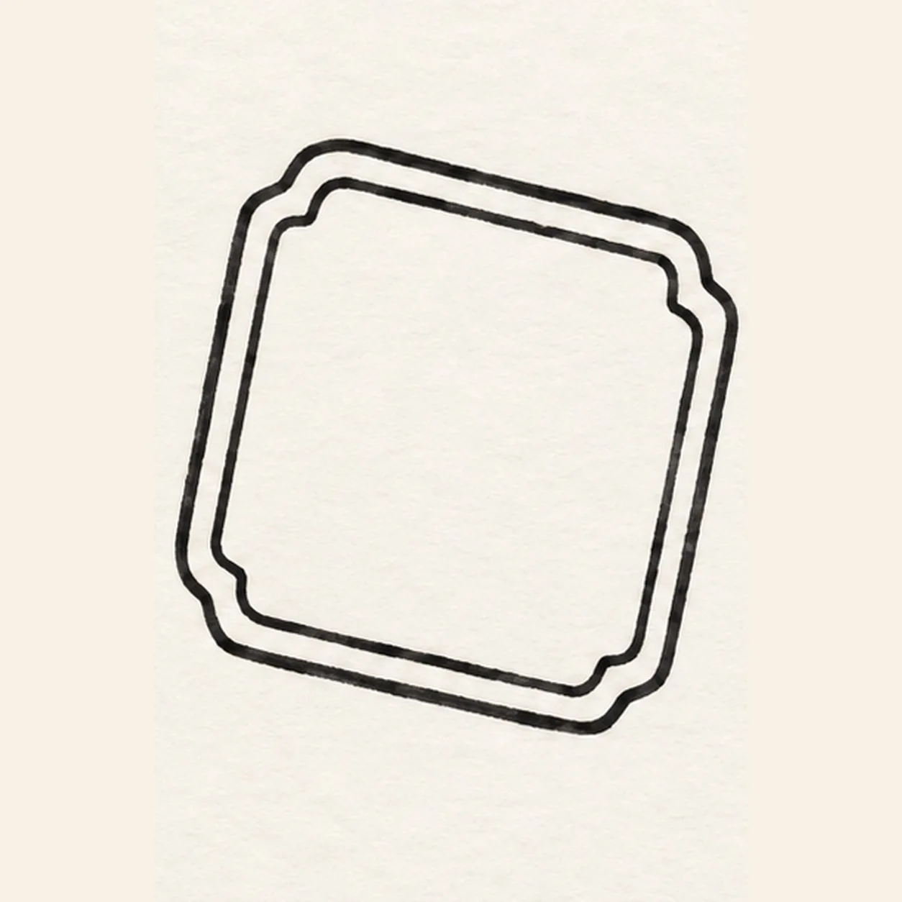
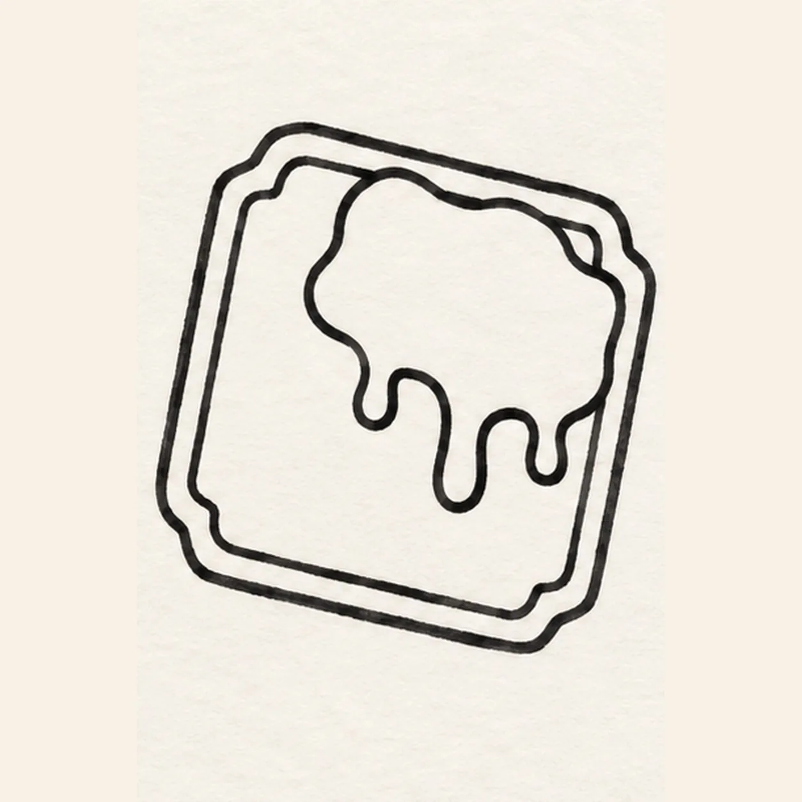
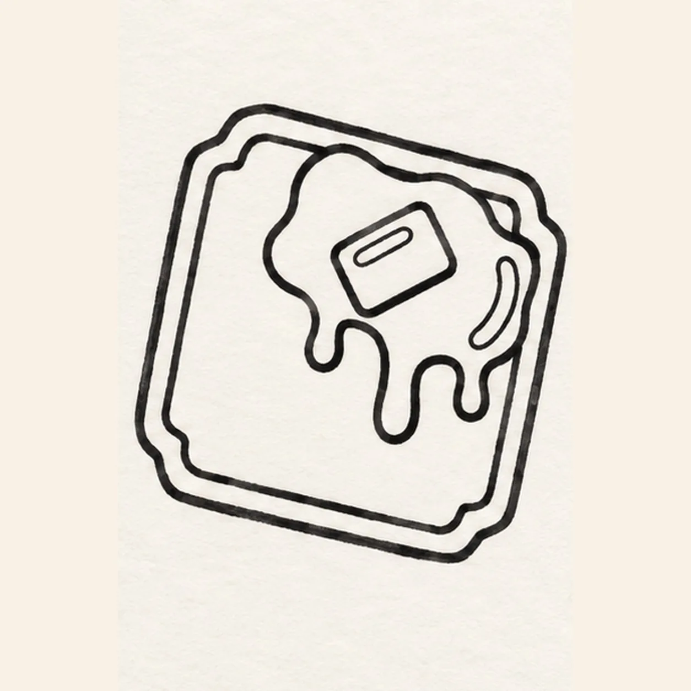
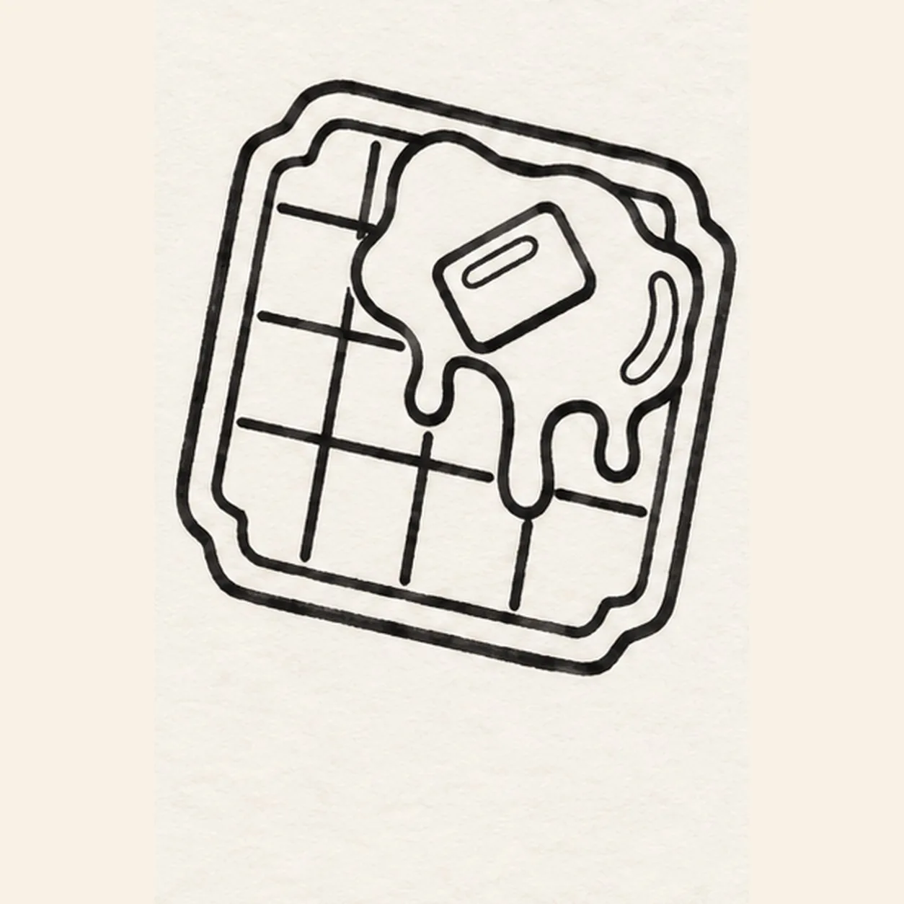
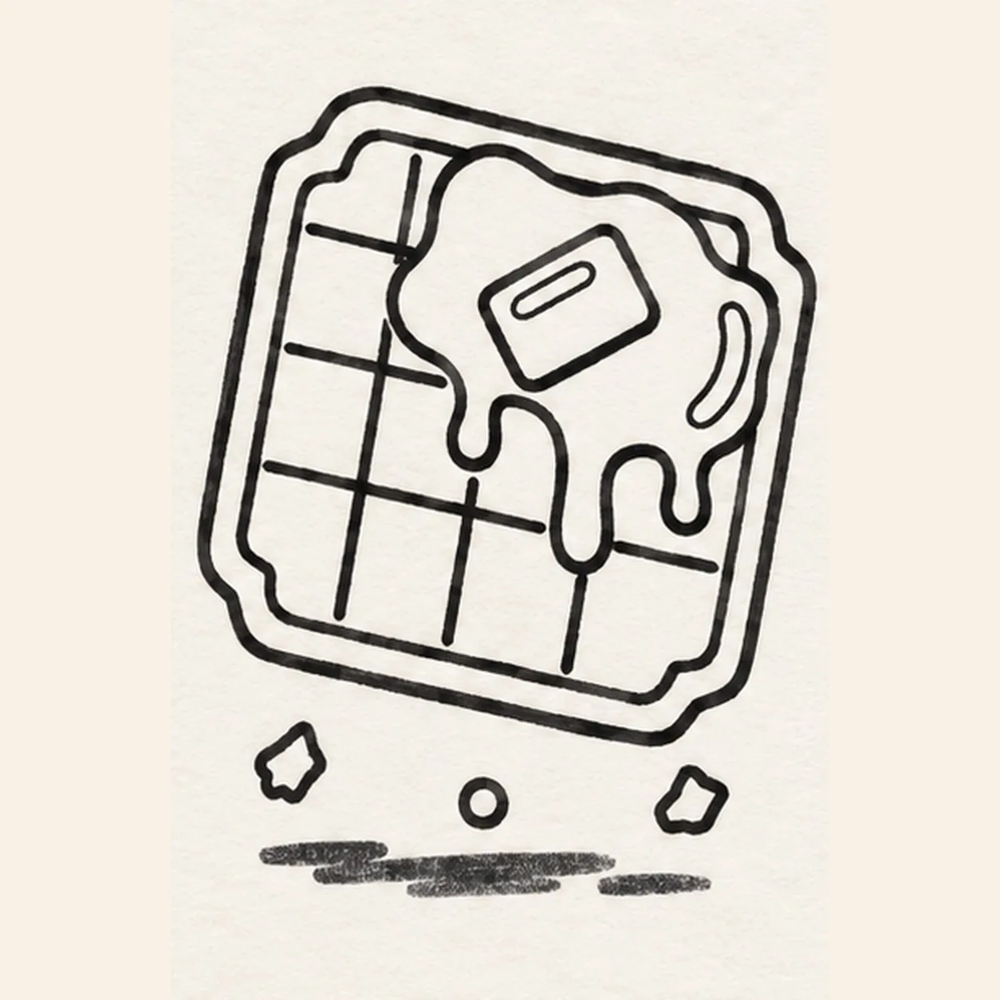

Marker ready?
Let's draw a waffle with syrup and butter
Treat this as one playful practice round: sketch the idea loosely, simplify the shapes, then commit with confident marker outlines and bright fills.
-
01

Draw the waffle shape
Draw one large rounded square tilted slightly clockwise. Soften each corner with a shallow notch, then follow all four sides with one parallel inset line to show the waffle's thick edge.
Marker tip: Pull each long side in one confident stroke, then echo the outer shape with an even inset gap.
-
02

Pour the syrup
Across the upper-right waffle surface, draw one irregular syrup pool. Pull exactly three rounded drips downward from its lower edge: a short left drip, one longer center drip, and a short right drip.
Marker tip: Vary the three drip lengths so the center one clearly hangs lowest.
-
03

Set the butter and shine
Inside the syrup pool, draw one small tilted rectangular pat of butter. Add one narrow highlight inside its upper edge and one curved highlight inside the pool on the right; keep both shapes enclosed and open for white paper.
Marker tip: Tilt the butter in the same general direction as the waffle, but let its corners stay softly rounded.
-
04

Build the waffle grid
Draw exactly three vertical grooves and three horizontal grooves across the exposed waffle. Stop each groove cleanly when it meets the syrup pool or inset edge instead of drawing through the topping.
Marker tip: Count three in each direction and lift the marker wherever syrup covers the route.
-
05

Scatter crumbs and shadow
Below the waffle, add exactly three small crumbs: one angular crumb at lower left, one round crumb near center, and one angular crumb at lower right. Draw one short broken ground shadow beneath them without touching the waffle edge.
Marker tip: Keep the crumbs different shapes and leave paper gaps between the shadow pieces.
-
06
Color the warm waffle
Fill the waffle golden yellow, deepen the inset edge and grooves with warm coral-orange, color the syrup amber, and fill the butter bright yellow. Leave both enclosed highlights white, color the three crumbs golden, and deepen the existing broken shadow with navy. Keep visible marker strokes and add no new outlines.
Marker tip: Follow each shape with directional strokes and stop once the warm, streaky marker texture feels even.